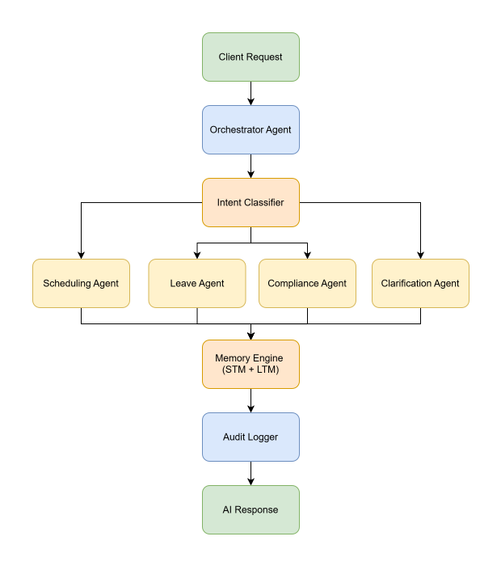
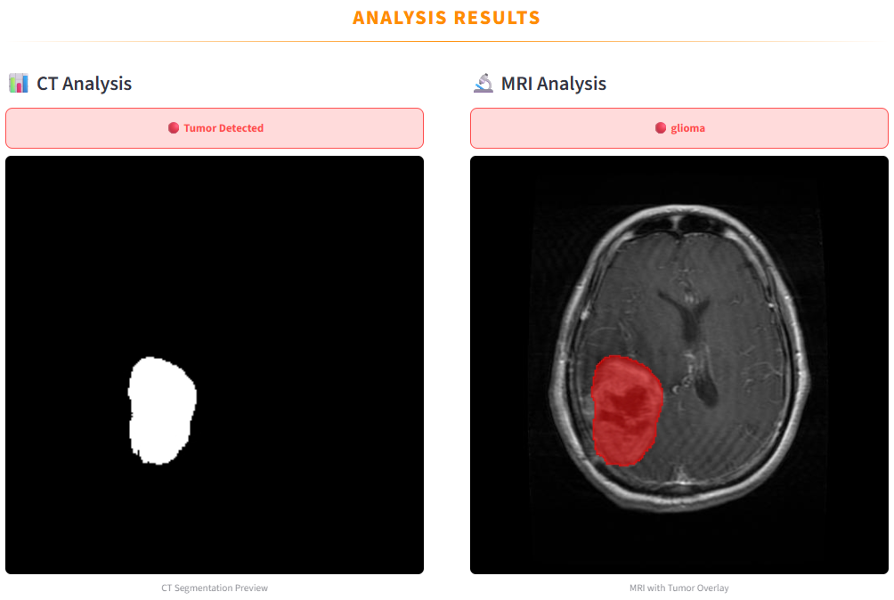
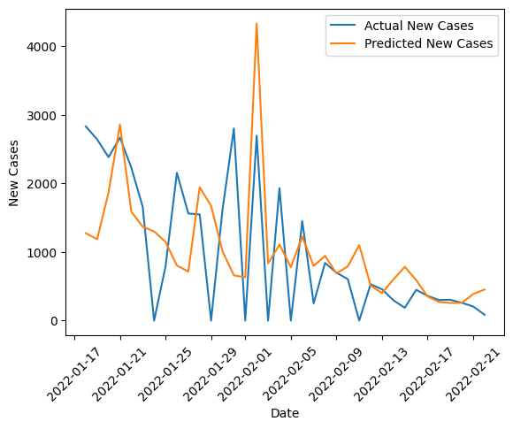

Machine Learning
Deep Learning
AI
Python
Building polished software and AI products that feel real
I design and build clean Java, Python, AI and machine learning projects with strong UI, structured logic, and practical outcomes.
5+ML & Software Projects
AIMachine Learning Focus
RealWorld Problem Solving
NowSeeking Internship Roles
About
Clear communication, thoughtful systems, and work that looks finished
I'm passionate about building practical applications that combine thoughtful interfaces, strong logic, and useful automation. My work includes AI systems, disease tracking tools, and machine learning projects using Python.
I care about user experience, code structure, and showing value quickly. That means neat interfaces, useful features, clean documentation, and project pages that explain what was built and why it matters.
Skills
Tools & Technologies
Frameworks & Libraries
Databases
AI / ML
Tools
Strengths
Featured Projects
Things I've Built

AI + Backend
View case study ↗
AHRIS — Automated HR Intelligence System
A FastAPI-based multi-agent HR automation system with an orchestrator that routes user requests to specialized agents using intent classification, memory (STM/LTM), and audit logging.

ML + Backend
View case study ↗
NeuroSight — Brain Tumor Detection and Classification System
An AI-based medical imaging system that detects brain tumors from MRI and CT scans and classifies them into different tumor types to support accurate and early diagnosis.

ML + Backend
View case study ↗
HealthSense — Disease Tracking & Forecasting System
A Java and Python-powered system for tracking health reports, managing records, and forecasting future trends using machine learning.
Process
How I think
Problem Definition
I start by identifying a clear use case and a real user need.
Design & Planning
I plan features, data flow, and UI structure before coding.
Build & Iterate
I develop with clean code, testing, and continuous improvements.
Polish & Present
I refine visuals, write strong README files, and present results well.
Experience & Growth
My Journey
Building AI + software projects
Focused on combining Java systems, Python AI & ML models, and real-world data into useful applications.
Kaggle & ML Competitions
Participated in machine learning competitions, focusing on model development, feature engineering, and performance optimization under real-world constraints.
Independent Python Project (Freelance)
Developed a Python-based game for a freelance client, implementing core gameplay mechanics and system logic. Managed client communication, requirement gathering, and iterative improvements throughout development.
Senior Prefect
Served as a senior prefect, contributing to school discipline, student coordination, and leadership activities while supporting school events and initiatives.
Chess & Football Team Member
Represented school in football and chess teams, competing in inter-school tournaments and contributing to team achievements.
Education
BSc (Hons) Artificial Intelligence and Data Science
Robert Gordon University
2025 - 2028 (Expected)
Year 2: Object Oriented Programming (A), Machine Learning (A), Professional Development (A), Artificial Intelligence (B)
Pending: Advanced Mathematics for Data Science, Data Engineering, Simulation & Modelling, Data Science Group Project
Year 1: Programming Fundamentals (A), Databases (A), Computer Systems (A), Web Technology (B), Data Structures (B)
A/Levels - Pearson Edexcel
Lyceum International School, Wattala
2022 - 2024
Chemistry (A*), Mathematics (A*), Physics (A*)
Certifications
- Introduction to Large Language Models — IBM SkillsBuild
- Retrieval-Augmented Generation (RAG) for Enhanced AI Output — IBM SkillsBuild
- Introduction to Generative AI — IBM SkillsBuild
- Artificial Intelligence Fundamentals — IBM SkillsBuild
- Fundamentals of Machine Learning — Saylor Academy
- Python Certification — freecodecamp
Currently Working On
- Python AI system integration for practical apps
- Real-time disease forecasting using LSTM models
- Improving UI quality, documentation, and deployment
Contact
Easy to reach, easy to hire.
Let's connect and build something meaningful.